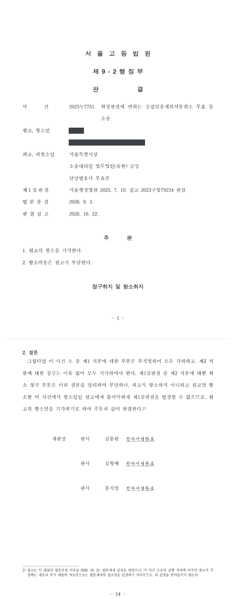

승진임용제외처분 무효확인·취소소송 (1·2심)
서울행정법원 2023구합79234 · 서울고등법원 2025누7751 · 담당변호사 부효준
판결문


사건의 요지
승진임용제외처분을 취소한 확정판결과 간접강제결정 뒤 임용권자가 다시 한 승진임용제외처분에 대하여, 이유를 보완한 후행 처분으로 선행 통지가 실효되는지, 후행 처분이 확정판결의 기속력에 반하거나 재량권을 일탈·남용한 것인지, 뒤늦게 추가한 취소청구가 제소기간을 지켰는지가 다투어진 사건입니다. 제1심(2025년 7월)은 제1 처분에 대한 청구와 제2 처분 취소청구를 각하하고 나머지 청구를 받아들이지 않았으며, 항소심(2026년 10월)은 제2 처분 취소청구가 제소기간을 지킨 것이라고 보면서도 본안에서 기속력 위반·법률유보원칙 위반·재량권 일탈 주장을 모두 배척하고, 원고만 항소한 사건이어서 불이익변경금지원칙에 따라 원고의 항소를 받아들이지 않았습니다.
사건의 주요 내용
원고는 2001년 임용되어 근무해 온 지방공무원입니다. 임용권자인 처분청은 2020년 12월 2021년 상반기 승진심사 결과를 공개하면서 원고를 상위 직급 승진예정자에서 제외하였고(선행 처분), 원고가 이를 다툰 소송에서 법원은 2022년 8월 '다면평가 결과만을 근거로 승진임용에서 제외한 것은 법령이 정한 한계를 벗어나고 재량권을 일탈·남용한 것'이라는 이유로 선행 처분을 취소하였으며, 이 판결은 2023년 6월 대법원에서 확정되었습니다.
원고는 처분청이 승진임용 절차를 이행하지 않는다며 간접강제를 신청하여 2023년 8월 '결정 정본을 받은 날부터 60일 이내에 승진계획 심사절차를 완료하고, 그 기간 안에 완료하지 않으면 1일당 50만 원을 지급하라'는 일부 인용 결정을 받았습니다. 처분청은 인사위원회의 승진심사를 거쳐 2023년 9월 원고에게 승진제외를 통지하였으나(제1 처분), 그 통지에 새로운 사유가 적혀 있지 않다는 이유로 원고가 다시 간접강제를 신청하자, 2023년 10월 승진후보자 명부 서열, 다면평가 순위, 강임자 우선승진 규정 등을 종합하여 승진에서 제외하였다는 인사처분 사유서를 붙여 다시 승진제외를 통지하였습니다(제2 처분).
원고는 제1 처분의 무효확인과 취소를 구하는 소를 제기한 뒤, 제2 처분에 대하여도 부존재확인(주위적), 무효확인(제1 예비적), 취소(제2 예비적)를 구하는 청구를 추가하였습니다. 제1심이 2025년 7월 원고의 청구를 모두 각하하거나 받아들이지 않자 원고가 항소하였고, 항소심은 2026년 10월 원고의 항소를 받아들이지 않았습니다. 같은 확정판결을 둘러싼 간접강제결정 청구이의 사건(2024구합62998·2025누7844)도 처분청이 재처분의무를 이행하였다는 이유로 2026년 9월 처분청 승소로 확정되었습니다. 부효준 변호사는 1·2심에서 임용권자인 처분청을 대리하였습니다.
쟁점
- 처분이유를 보완한 제2 처분이 이루어진 뒤에도 제1 처분의 무효확인·취소를 구할 소의 이익이 있는지
- 인사처분 사유서를 붙여 한 제2 처분이 독립된 행정처분인지, 아니면 제1 처분의 사유를 보충하는 관념의 통지에 불과한지
- 다면평가 결과 외에 명부 서열·강임자 우선승진 규정 등을 함께 고려한 제2 처분이 '다면평가 결과만을 근거로 한' 선행 처분을 취소한 확정판결의 기속력에 반하는지, 그리고 실체적 위법사유로 취소판결이 확정되면 처분청이 승진시키는 처분만 할 수 있는지
- 제2 처분을 통보받고 90일이 지나 청구취지 변경으로 추가한 취소청구가 제소기간을 지킨 것인지(제1심과 항소심의 판단이 갈린 쟁점)
- 다면평가 결과를 승진임용에 반영하는 것이 법률유보원칙에 반하는지, 제2 처분이 재량권을 일탈·남용한 것인지
원고의 주장
- 제1 처분에 대하여는, 같은 당사자 사이에 같은 사유로 위법한 처분이 되풀이될 위험이 있어 위법성 확인의 필요가 있으므로 소의 이익이 있고, 제1 처분이 존속할 것이라는 신뢰가 침해되어 신뢰보호원칙에도 반한다고 주장하였습니다.
- 제2 처분은 제1 처분의 처분사유를 보충하는 관념의 통지에 불과하여 독립된 처분이 아니므로 그 부존재 확인을 구한다고 주장하였습니다.
- 설령 제2 처분이 존재하더라도 다면평가 결과를 실질적 결격요건으로 삼아 선행 처분과 같은 심사방식을 되풀이한 것이어서 확정판결의 기속력에 반하고, 실체적 위법사유로 거부처분이 취소된 이상 처분청은 승진시키는 처분만 할 수 있으며, 제2 처분의 사유는 선행 처분 당시부터 있던 사정이어서 다시 거부처분을 할 수 없다고 주장하였습니다. 항소심에서는 다면평가 결과를 임용에 반영할 수 있도록 한 지방공무원 임용령 제7조 제2항은 보직관리에 한정되므로 승진임용에 적용하면 법률유보원칙에 반하고, 제2 처분은 원고를 괴롭히거나 내부 공익신고에 보복할 목적으로 이루어졌다고도 주장하였습니다.
부효준 변호사의 주장
- 제1 처분은 그 주요 부분을 실질적으로 변경하는 제2 처분이 이루어짐에 따라 효력을 잃었으므로 더 이상 무효확인이나 취소를 구할 법률상 이익이 없고, 지방공무원법 제20조의2에 따른 소청심사위원회의 심사·결정을 거치지 않고 제기된 소도 부적법하다는 본안전항변을 하였습니다.
- 제2 처분은 확정판결과 간접강제결정의 취지를 반영하여 인사위원회를 열어 다면평가 결과를 승진제외 기준이 아닌 보조자료로 참고하고, 승진후보자 명부 서열, 근무성적·경력 평정, 강임자 우선승진 규정 등을 종합적으로 검토하여 한 것이므로, 선행 처분의 처분사유와 기본적 사실관계가 다르고 확정판결의 기속력에 반하지 않는다는 점을 밝혔습니다. 확정판결은 다면평가 결과만을 근거로 승진 여부를 정해서는 안 된다는 취지일 뿐이고, 처분청에는 법령이 정한 방법과 절차에 따라 승진임용 여부를 다시 결정할 의무가 있을 뿐 원고를 반드시 승진시킬 의무는 없다고 반박하였습니다.
- 공무원 승진임용에 관하여는 임용권자에게 매우 광범위한 재량이 인정되고, 지방공무원법이 승진임용의 방법과 절차를 대통령령에 위임하고 있으므로 다면평가 결과를 임용에 반영할 수 있다는 임용령 규정은 법률유보원칙에 어긋나지 않으며, 미리 공고된 승진심사 기준에 따라 명부 순위를 조정한 것은 재량 범위 안에 있고 괴롭힘이나 보복 목적을 뒷받침할 자료가 없다는 점을 들었습니다.
법원의 판단
제1심은 제1 처분과 제2 처분이 모두 같은 인사위원회 의결에 기초하여 '간접강제결정에 따라 승진심사를 실시한 결과 승진에서 제외한다'는 취지이고, 제2 처분은 제1 처분 당시 제시되지 않은 처분사유를 구체적으로 제시하여 제1 처분을 실질적으로 대체한 것이므로 제1 처분은 실효되었다고 보아, 제1 처분에 대한 무효확인·취소 청구를 소의 이익이 없다며 각하하였습니다.
제2 처분에 대하여 제1심은 독립된 행정처분의 외형을 갖추었다고 보아 부존재확인 청구를 배척하고, 취소판결의 기속력에 관한 대법원 판례(2005. 12. 9. 선고 2003두7705 판결, 2016. 3. 24. 선고 2015두48235 판결 등)에 따라 근무성적·경력 평정과 서열, 강임자 우선승진 규정까지 종합 검토한 제2 처분의 사유는 선행 처분의 사유와 기본적 사실관계가 다르므로 기속력에 반하지 않고 무효 사유도 없다고 판단하였습니다.
제1심은 제2 처분의 취소 청구에 대하여, 원고가 2023년 10월 제2 처분을 통보받고 같은 해 11월 소청심사결정을 송달받았는데도 2024년 8월에야 청구취지 변경으로 취소 청구를 추가하였으므로 제소기간을 넘겨 부적법하다고 보아 각하하였습니다. 그러나 항소심은 선행 처분에 대한 취소소송이 제소기간 안에 적법하게 제기되어 계속 중에 행정청이 선행 처분을 직권으로 취소하고 실질적으로 동일한 후행 처분을 한 경우에는 소변경의 제소기간 준수 여부를 따로 따질 필요가 없다는 대법원 판례(2019. 7. 4. 선고 2018두58431 판결)에 따라, 제1 처분을 통보받은 날 소를 제기한 이상 내용이 같은 제2 처분의 취소청구도 적법하다고 보아 본안을 판단하였습니다.
항소심은 본안에서, 확정판결은 다면평가 결과만을 근거로 승진 여부를 정해서는 안 된다는 취지일 뿐 다면평가 결과를 보조적 자료로 함께 고려하는 것까지 막는 것이 아니고, 인사위원회가 근무성적·경력평정을 중심으로 심사하면서 강임자 우선승진 규정과 다면평가 하위 10% 해당자에 대한 부분 순위조정을 거쳐 승진대상자 90명을 정한 이상 다면평가 결과를 실질적 결격요건으로 삼았다고 볼 수 없다고 하였습니다. 또한 처분청에는 확정판결의 취지를 반영하여 법령이 정한 방법과 절차에 따라 승진임용 여부를 다시 결정할 의무가 있을 뿐 무조건 원고를 승진대상에 포함시킬 의무는 없고, 제2 처분의 사유가 선행 처분 당시부터 있던 사정이더라도 기본적 사실관계가 다른 이상 기속력에 저촉되지 않는다고 판단하였습니다.
재량권에 관하여 항소심은, 지방공무원법이 승진임용의 방법과 절차를 대통령령에 위임하고 있고 임용령상 '임용'에 승진임용이 포함되므로 다면평가 결과를 임용에 반영할 수 있도록 한 임용령 제7조 제2항은 법률유보원칙에 반하지 않으며, 승진심사대상자 198명 중 83등이던 원고를 다면평가 최하위(하위 10%)와 강임자 2명의 우선승진을 반영하여 승진예정인원 90명에서 제외한 것은 미리 공고된 승진심사 기준에 따른 것으로서 사회통념상 합리성이 있고 임용권자의 광범위한 재량을 벗어나지 않았으며, 괴롭힘이나 내부 공익신고에 대한 보복 목적을 인정할 증거도 없다고 보았습니다.
다만 제2 처분 취소청구를 각하한 제1심의 결론이 부당하더라도 원고만 항소한 사건에서 원고에게 불이익하게 바꿀 수 없으므로 항소심은 원고의 항소를 받아들이지 않았고, 변론종결 뒤의 변론재개 신청도 받아들이지 않았습니다.
취소 확정판결의 기속력은 그 판결의 주문 및 전제가 되는 처분 등의 구체적 위법사유에 관한 판단에도 미치나, 종전 처분이 판결에 의하여 취소되었다 하더라도 종전 처분과 다른 사유를 들어서 새로이 처분을 하는 것은 기속력에 저촉되지 않는다. 여기에서 동일 사유인지 다른 사유인지는 확정판결에서 위법한 것으로 판단된 종전 처분사유와 기본적 사실관계에 있어 동일성이 인정되는지 여부에 따라 판단되어야 하고, 기본적 사실관계의 동일성 유무는 처분사유를 법률적으로 평가하기 이전의 구체적인 사실에 착안하여 그 기초인 사회적 사실관계가 기본적인 점에서 동일한지에 따라 결정된다(대법원 2005. 12. 9. 선고 2003두7705 판결 등 참조).
서울행정법원 2023구합79234 판결 이유 '4. 다. 1) 관련 법리 가)' 부분
선행 처분에 대하여 제소기간 내에 취소소송이 적법하게 제기되어 계속 중에 행정청이 선행 처분서 문언에 일부 오기가 있어 이를 정정할 수 있음에도 선행 처분을 직권으로 취소하고 실질적으로 동일한 내용의 후행 처분을 함으로써 선행 처분과 후행 처분 사이에 밀접한 관련성이 있고 선행 처분에 존재한다고 주장되는 위법사유가 후행 처분에도 마찬가지로 존재할 수 있는 관계인 경우에는 후행 처분의 취소를 구하는 소변경의 제소기간 준수 여부는 따로 따질 필요가 없다(대법원 2019. 7. 4. 선고 2018두58431 판결 참조).
서울고등법원 2025누7751 판결 이유 '다. 1) 가) 관련 법리'(제2 처분 취소 청구의 제소기간)
이 사건 확정판결은 피고가 다면평가결과만을 근거로 원고를 승진임용에서 제외한 것이 위법하다는 취지이므로, 피고는 이 사건 확정판결에서 확인된 위법사유를 배제한 상태에서 위 판결의 취지를 반영하여 지방공무원법, 지방공무원 임용령 등 관계 법령에서 정한 방법과 절차에 따라 원고에 대한 승진임용 여부를 다시 결정하여야 할 의무가 있을 뿐이며, 이와 달리 피고에게 이 사건 확정판결에 따라 무조건 원고를 6급 승진대상에 포함되는 것으로 결정하여야 할 의무가 있다고 볼 수 없다. 또한 제2 처분의 사유가 선행 처분의 사유와 기본적 사실관계가 동일하지 않음은 앞서 본 바와 같으므로, 제2 처분의 사유가 선행 처분 당시 존재하고 있었다고 하더라도 이러한 사정만으로 제2 처분이 이 사건 확정판결의 기속력에 저촉된다고 할 수 없다.
서울고등법원 2025누7751 판결 이유 '다. 2) 나) (3)'(확정판결의 기속력 위반 여부)
공무원 승진임용에 관해서는 임용권자에게 일반 국민에 대한 행정처분이나 공무원에 대한 징계처분에서와는 비교할 수 없을 정도의 매우 광범위한 재량이 부여되어 있으므로 승진임용자의 자격을 정한 관련 법령 규정에 위배되지 아니하고 사회통념상 합리성을 갖춘 사유에 따른 것이라는 일응의 주장ㆍ증명이 있다면 쉽사리 위법하다고 판단하여서는 안 된다(대법원 2018. 3. 27. 선고 2015두47492 판결 등 참조).
서울고등법원 2025누7751 판결 이유 '다. 3) 가) 관련 법리'(재량권의 일탈·남용 여부)
※ 판결 이유 가운데 이 사건의 판단 기준이 된 부분을 그대로 옮긴 것으로, 당사자 이름 등은 가렸습니다.
이 사건이 보여 주는 것
승진제외처분을 취소하는 판결이 확정되면 임용권자는 판결의 취지에 따라 다시 심사하여야 하지만, 반드시 승진시켜야 하는 것은 아닙니다. 이 사건 1·2심은 종전 처분에서 위법하다고 지적된 점(다면평가 결과만을 근거로 한 점)을 배제하고 법령이 정한 평정 요소와 명부 서열, 우선승진 규정 등을 종합하여 다시 심사한 뒤 같은 결론에 이르렀더라도, 그 사유가 종전 처분사유와 기본적 사실관계가 다르면 기속력에 반하지 않고, 다면평가 결과를 보조자료로 함께 고려하는 것도 허용된다는 점을 거듭 확인하였습니다.
제소기간에 관하여는 1심과 항소심의 판단이 달랐습니다. 1심은 뒤늦게 추가한 후행 처분 취소청구를 추가 시점 기준으로 제소기간을 넘겼다고 보았으나, 항소심은 선행 처분에 대한 소가 적법하게 계속 중인 때 행정청이 실질적으로 같은 내용의 후행 처분을 한 경우에는 소변경의 제소기간을 따로 따지지 않는다는 대법원 판례를 적용하였습니다. 처분청으로서는 소송 중에 이유를 보완한 재처분을 하면 그 처분도 같은 소송에서 본안 판단을 받게 된다는 점을 염두에 두고, 재처분의 사유와 절차를 처음부터 충실히 갖추어야 합니다.
관련 법령행정소송법 제8조 제2항, 제14조 제4항, 제20조 제1항·제2항, 제21조 제5항, 제30조 제2항 · 행정심판법 제27조 제1항 · 구 지방공무원법(2024. 12. 31. 법률 제20621호로 개정되기 전의 것) 제20조의2, 제38조, 제39조, 제65조의4 제2항 · 지방공무원 임용령 제2조 제1호, 제7조 제2항, 제8조의4, 제30조, 제32조 · 민사소송법 제415조, 제420조
관련 단어승진임용제외처분지방공무원 승진다면평가취소판결의 기속력재처분간접강제처분사유의 기본적 사실관계 동일성소의 이익제소기간후행 처분 소변경청구취지 추가강임자 우선승진법률유보원칙불이익변경금지항소심
비슷한 처분을 받으셨다면
행정처분은 처분이 있음을 안 날부터 90일 이내에 행정심판이나 취소소송으로 다투어야 하고, 기간이 지나면 돌이킬 수 없는 처분은 집행정지를 서둘러야 합니다. 처분서를 받은 날짜부터 확인해 드립니다.